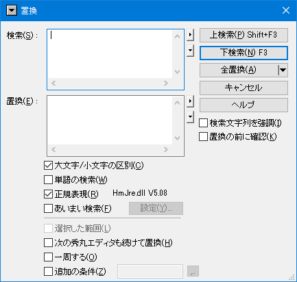
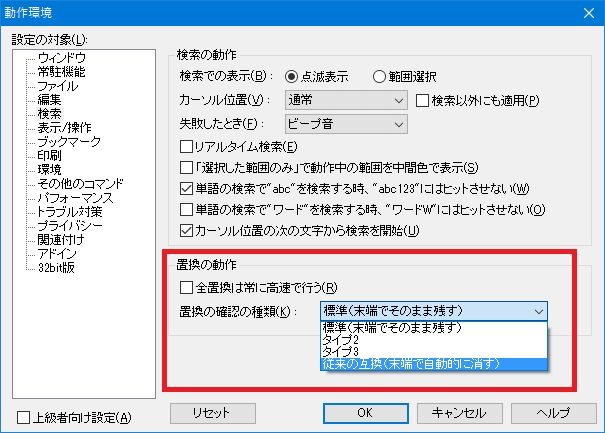

編集中のファイルにいっぱいある、特定の文字(列)を別の文字(列)に置き換えたい時には、秀丸エディタの「置換」機能を使えば簡単にできます。
(「置換」とは、
という二つの作業を一度に行う事です。)
編集中のファイルにある「over」という文字列を「upper」という文字列に置き換えたいとします。
「大文字／小文字の区別」チェックボックス：
検索文字列の大文字と小文字を区別して検索します。 この項目がＯＦＦの場合、上の例で「OVER」や「Over」も置換対象になります。
「単語の検索」チェックボックス：
この項目がＯＮになっていると、「Lovers」や「fover」等の、ある語の一部になっている場合は置換対象になりません。
「正規表現」チェックボックス：
検索文字列に「正規表現」が使える様になります。この項目をＯＮにすると、上記二つのオプション指定は無効になります。
「正規表現」については「●正規表現について」を参照して下さい。
「あいまい検索」チェックボックス：
「正規表現」をさらに便利にした「あいまい」な検索が可能になります(全半角同一視、等)。
「あいまい検索」については「●あいまい検索について」を参照して下さい。
「選択した範囲内のみ」チェックボックス：
置換の範囲があらかじめ「範囲選択」された部分に限定されます。
※このオプションの動作の詳細については、[HME0083A] ●検索／置換の「選択した範囲内のみ」の動作 を参照してください。
「次の秀丸エディタも続けて置換」チェックボックス
現在編集中の秀丸エディタウィンドウの他にも秀丸エディタが開いていた場合、その秀丸エディタウィンドウの内容に対しても置換を実行します。
「一周する」チェックボックス
一番下まで検索し終わった場合、先頭に戻って検索します。上検索の場合は逆になります。
「追加の条件」チェックボックス
追加の条件に従って検索する範囲を制限できます。
検索の「追加の条件」についてを参照してください。
「検索文字列を強調」チェックボックス
検索を実行後、検索に該当する文字列を強調表示します。
「置換の前に確認」チェックボックス
確認ダイアログを表示し、置換する前に本当に置換するかどうかの確認をします。
置換の確認ダイアログは「その他→動作環境→検索→検索ダイアログ」の「置換の確認の種類」で、種類を変更できます。
のいずれかを選んで下さい。
検索部分は、検索の「検索文字列の取り込みについて」と同じ事が可能です。
「検索」、「置換」部分は、複数行に対応しています。 「検索」、「置換入力部の横にある▲マークのメニューから「複数行」を選択してください。

「検索」で表示されるメニューは検索ダイアログ と同じです。
「置換」で表示されるメニューは以下になります。
「置換」ダイアログのタイトルバー部分にある「▼」マークを押すと、メニューが表示されます。 「検索文字列の追加取得」、「検索の動作環境」を開いたり、「検索ダイアログ」に切り替える事も可能です。
「置換の前に確認」にチェックを入れた場合、確認用ダイアログが表示されます。 このダイアログは複数あり、設定により切り替え可能です。
従来のダイアログ

新しいダイアログ(タイプ2)

新しいダイアログ(タイプ3)

以前だと、「一周する」がオフの状態で、上検索または下検索を行い、 ファイルの上限か下限に達して、検索出来なくなると確認ダイアログが消えましたが、 現状では「キャンセル」しないと表示されたままになります。 (移動できない方向の検索ボタンは無効化された状態になる。)
従来のダイアログでの表示例

これは、例えば「下検索」実行時に、ファイル末尾まで検索した場合、そのまま「上検索」を実行可能にする為です。 以前のように、マッチしなくなった場合、ダイアログを消すよう変更する事も可能です。
各機能に関しては、「ヘルプ」を参照の事。

「置換の動作」で「置換の確認の種類」で置換確認のダイアログを選択可能です。

「置換ダイアログボックス」の「置換の確認の種類」でも置換確認のダイアログを選択可能です。
秀丸エディタ Ver.8.13より、置換時、検索結果に対し、変換モジュールの機能を実行できるようになりました。
これで何ができるかというと、検索でマッチした箇所を、大文字/小文字/全角/半角へ変換する事が可能になります。 (検索でマッチした箇所に、変換モジュールが持つ各種変換を実行する事ができる。)
この機能を使用する場合は、「正規表現」 を有効にする必要があります。
標準添付されている変換モジュールの機能は以下になります。
| 関数名 | 機能 |
|---|---|
| ToUpper | UPPER CASE(大文字へ) |
| ToLower | lower case(小文字へ) |
| ToHankaku | ハンカク |
| ToZenkakuHira | 全角ひらがな |
| ToZenkakuKata | 全角カタカナ |
| ToSpace | TAB -> 空白 |
| ToTab | 空白 -> TAB |
| ToHankakuAlnum | 英数字/記号/空白のみ半角に |
| ToZenkakuAlnum | 英数字/記号/空白のみ全角に |
| ToHankakuKataOnly | カタカナのみ半角に |
| ToZenkakuKataOnly | カタカナのみ全角に |
| Indent | インデント |
| UnIndent | 逆インデント |
| Sort | ソート |
置換のエディットボックスに以下のフォーマットで記入すること。
\(タグ番号, 関数名, 変換モジュール名)標準添付の変換モジュールは省略可能。 標準添付以外の変換モジュールを使う場合は指定する必要がある。
秀丸エディタ本体と同じ場所に変換モジュールがある場合以外は、フルパスで指定する事。
通常の置換で行う場合は、
置換一回目
検索：hidemaru
置換：HIDEMARU
置換二回目
検索：editor
置換：EDITORのように2回の置換を行う必要があるが、変換モジュールの機能を使えば一回の置換で可能。
検索：(hidemaru|editor)
置換：\(0,ToUpper)
実行前：hidemaru editor
実行後：HIDEMARU EDITOR変換モジュールの機能を組み合わせることも可能で、大文字に変換して、さらに全角へ変換という事もできます。
検索：(hidemaru|editor)
置換：\((0,ToUpper),ToZenkakuAlnum)
実行前：hidemaru editor
実行後：ＨＩＤＥＭＡＲＵ ＥＤＩＴＯＲ詳細はヘルプ置換の時の、変換モジュールによる変換の指定（Ver8.52対応版） を参照してください。
「検索」は検索と共通ですが、「置換」は単独で設定可能です。
「ヒストリーに常駐」の設定方法は、「検索」の「ヒストリーに常駐」を参照してください。